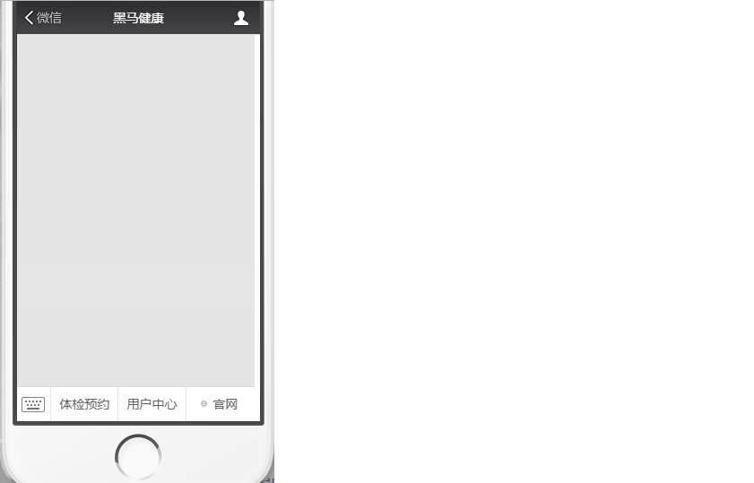

第9章 移动端开发-手机快速登录、权限控制
1. 需求分析
手机快速登录功能，就是通过短信验证码的方式进行登录。这种方式相对于用户名密码登录方式，用户不需要记忆自己的密码，只需要通过输入手机号并获取验证码就可以完成登录，是目前比较流行的登录方式。


2. 手机快速登录
2.1 页面调整
登录页面为/pages/login.html
2.1.1 发送验证码
为获取验证码按钮绑定事件，并在事件对应的处理函数中校验手机号，如果手机号输入正确则显示30秒倒计时效果并发送ajax请求，发送短信验证码
<div class="input-row"> <label>手机号</label> <div class="loginInput"> <input v-model="loginInfo.telephone" id='account' type="text" placeholder="请输入手机号"> <input id="validateCodeButton" @click="sendValidateCode()" type="button" style="font-size: 12px" value="获取验证码"> </div></div>xxxxxxxxxx<script> var vue = new Vue({ el:'#app', data:{ loginInfo:{}//登录信息 }, methods:{ //发送验证码 sendValidateCode(){ var telephone = this.loginInfo.telephone; if (!checkTelephone(telephone)) { this.$message.error('请输入正确的手机号'); return false; } validateCodeButton = $("#validateCodeButton")[0]; clock = window.setInterval(doLoop, 1000); //一秒执行一次 axios. post("/validateCode/send4Login.do?telephone=" + telephone). then((response) => { if(!response.data.flag){ //验证码发送失败 this.$message.error('验证码发送失败，请检查手机号输入是否正确'); } }); } } });</script>在ValidateCodeController中提供send4Login方法，调用短信服务发送验证码并将验证码保存到redis
xxxxxxxxxx//手机快速登录时发送手机验证码("/send4Login")public Result send4Login(String telephone){ Integer code = ValidateCodeUtils.generateValidateCode(6);//生成6位数字验证码 try { //发送短信 SMSUtils.sendShortMessage(SMSUtils.VALIDATE_CODE,telephone,code.toString()); } catch (ClientException e) { e.printStackTrace(); //验证码发送失败 return new Result(false, MessageConstant.SEND_VALIDATECODE_FAIL); } System.out.println("发送的手机验证码为：" + code); //将生成的验证码缓存到redis jedisPool.getResource().setex(telephone+RedisMessageConstant.SENDTYPE_LOGIN, 5 * 60, code.toString()); //验证码发送成功 return new Result(true,MessageConstant.SEND_VALIDATECODE_SUCCESS);}2.1.2 提交登录请求
为登录按钮绑定事件
xxxxxxxxxx<div class="btn yes-btn"><a @click="login()" href="#">登录</a></div>xxxxxxxxxx//登录login(){ var telephone = this.loginInfo.telephone; if (!checkTelephone(telephone)) { this.$message.error('请输入正确的手机号'); return false; } axios.post("/member/login.do",this.loginInfo).then((response) => { if(response.data.flag){ //登录成功,跳转到会员页面 window.location.href="member.html"; }else{ //失败，提示失败信息 this.$message.error(response.data.message); } });}2.2 后台代码
2.2.1 Controller
在health_mobile工程中创建MemberController并提供login方法进行登录检查，处理逻辑为：
1、校验用户输入的短信验证码是否正确，如果验证码错误则登录失败
2、如果验证码正确，则判断当前用户是否为会员，如果不是会员则自动完成会员注册
3、向客户端写入Cookie，内容为用户手机号
4、将会员信息保存到Redis，使用手机号作为key，保存时长为30分钟
xxxxxxxxxxpackage com.itheima.controller;import com.alibaba.fastjson.JSON;import com.alibaba.dubbo.config.annotation.Reference;import com.aliyuncs.exceptions.ClientException;import com.itheima.constant.MessageConstant;import com.itheima.constant.RedisConstant;import com.itheima.constant.RedisMessageConstant;import com.itheima.entity.Result;import com.itheima.pojo.Member;import com.itheima.service.MemberService;import com.itheima.utils.JedisUtils;import org.springframework.beans.factory.annotation.Autowired;import org.springframework.web.bind.annotation.RequestBody;import org.springframework.web.bind.annotation.RequestMapping;import org.springframework.web.bind.annotation.RestController;import redis.clients.jedis.JedisPool;import javax.servlet.http.Cookie;import javax.servlet.http.HttpServletResponse;import java.util.Date;import java.util.Map;/** * 会员登录 */("/member")public class MemberController { private MemberService memberService; private JedisPool jedisPool; //使用手机号和验证码登录 ("/login") public Result login(HttpServletResponse response, Map map){ String telephone = (String) map.get("telephone"); String validateCode = (String) map.get("validateCode"); //从Redis中获取缓存的验证码 String codeInRedis = jedisPool.getResource().get(telephone+RedisMessageConstant.SENDTYPE_LOGIN); if(codeInRedis == null || !codeInRedis.equals(validateCode)){ //验证码输入错误 return new Result(false,MessageConstant.VALIDATECODE_ERROR); }else{ //验证码输入正确 //判断当前用户是否为会员 Member member = memberService.findByTelephone(telephone); if(member == null){ //当前用户不是会员，自动完成注册 member = new Member(); member.setPhoneNumber(telephone); member.setRegTime(new Date()); memberService.add(member); } //登录成功 //写入Cookie，跟踪用户 Cookie cookie = new Cookie("login_member_telephone",telephone); cookie.setPath("/");//路径 cookie.setMaxAge(60*60*24*30);//有效期30天 response.addCookie(cookie); //保存会员信息到Redis中 String json = JSON.toJSON(member).toString(); jedisPool.getResource().setex(telephone,60*30,json); return new Result(true,MessageConstant.LOGIN_SUCCESS); } }}2.2.2 服务接口
在MemberService服务接口中提供findByTelephone和add方法
xxxxxxxxxxpublic void add(Member member);public Member findByTelephone(String telephone);2.2.3 服务实现类
在MemberServiceImpl服务实现类中实现findByTelephone和add方法
xxxxxxxxxx//根据手机号查询会员public Member findByTelephone(String telephone) { return memberDao.findByTelephone(telephone);}//新增会员public void add(Member member) { if(member.getPassword() != null){ member.setPassword(MD5Utils.md5(member.getPassword())); } memberDao.add(member);}2.2.4 Dao接口
在MemberDao接口中声明findByTelephone和add方法
xxxxxxxxxxpublic Member findByTelephone(String telephone);public void add(Member member);2.2.5 Mapper映射文件
在MemberDao.xml映射文件中定义SQL语句
xxxxxxxxxx<!--新增会员--><insert id="add" parameterType="com.itheima.pojo.Member"> <selectKey resultType="java.lang.Integer" order="AFTER" keyProperty="id"> SELECT LAST_INSERT_ID() </selectKey> insert into t_member (fileNumber,name,sex,idCard,phoneNumber,regTime,password,email,birthday,remark) values (#{fileNumber},#{name},#{sex},#{idCard},#{phoneNumber},#{regTime},#{password},#{email},#{birthday},#{remark})</insert><!--根据手机号查询会员--><select id="findByTelephone" parameterType="string" resultType="com.itheima.pojo.Member"> select * from t_member where phoneNumber = #{phoneNumber}</select>3. 权限控制
3.1 认证和授权概念
前面我们已经完成了传智健康后台管理系统的部分功能，例如检查项管理、检查组管理、套餐管理、预约设置等。接下来我们需要思考2个问题：
问题1：在生产环境下我们如果不登录后台系统就可以完成这些功能操作吗？
答案显然是否定的，要操作这些功能必须首先登录到系统才可以。
问题2：是不是所有用户，只要登录成功就都可以操作所有功能呢？
答案是否定的，并不是所有的用户都可以操作这些功能。不同的用户可能拥有不同的权限，这就需要进行授权了。
认证：系统提供的用于识别用户身份的功能，通常提供用户名和密码进行登录其实就是在进行认证，认证的目的是让系统知道你是谁。
授权：用户认证成功后，需要为用户授权，其实就是指定当前用户可以操作哪些功能。
本章节就是要对后台系统进行权限控制，其本质就是对用户进行认证和授权。
3.2 权限模块数据模型
前面已经分析了认证和授权的概念，要实现最终的权限控制，需要有一套表结构支撑：
用户表t_user、权限表t_permission、角色表t_role、菜单表t_menu、用户角色关系表t_user_role、角色权限关系表t_role_permission、角色菜单关系表t_role_menu。
表之间关系如下图：

通过上图可以看到，权限模块共涉及到7张表。在这7张表中，角色表起到了至关重要的作用，其处于核心位置，因为用户、权限、菜单都和角色是多对多关系。
接下来我们可以分析一下在认证和授权过程中分别会使用到哪些表：
认证过程：只需要用户表就可以了，在用户登录时可以查询用户表t_user进行校验，判断用户输入的用户名和密码是否正确。
授权过程：用户必须完成认证之后才可以进行授权，首先可以根据用户查询其角色，再根据角色查询对应的菜单，这样就确定了用户能够看到哪些菜单。然后再根据用户的角色查询对应的权限，这样就确定了用户拥有哪些权限。所以授权过程会用到上面7张表。
3.3 Spring Security简介
Spring Security是 Spring提供的安全认证服务的框架。 使用Spring Security可以帮助我们来简化认证和授权的过程。官网：https://spring.io/projects/spring-security

对应的maven坐标：
xxxxxxxxxx<dependency> <groupId>org.springframework.security</groupId> <artifactId>spring-security-web</artifactId> <version>5.0.5.RELEASE</version></dependency><dependency> <groupId>org.springframework.security</groupId> <artifactId>spring-security-config</artifactId> <version>5.0.5.RELEASE</version></dependency>常用的权限框架除了Spring Security，还有Apache的shiro框架。
3.4 Spring Security入门案例
3.4.1 工程搭建
创建maven工程，打包方式为war，为了方便起见我们可以让入门案例工程依赖health_interface，这样相关的依赖都继承过来了。
pom.xml
x <project xmlns="http://maven.apache.org/POM/4.0.0" xmlns:xsi="http://www.w3.org/2001/XMLSchema-instance" xsi:schemaLocation="http://maven.apache.org/POM/4.0.0 http://maven.apache.org/xsd/maven-4.0.0.xsd"> <modelVersion>4.0.0</modelVersion> <groupId>com.itheima</groupId> <artifactId>springsecuritydemo</artifactId> <version>1.0-SNAPSHOT</version> <packaging>war</packaging> <name>springsecuritydemo Maven Webapp</name> <url>http://www.example.com</url> <properties> <project.build.sourceEncoding>UTF-8</project.build.sourceEncoding> <maven.compiler.source>1.8</maven.compiler.source> <maven.compiler.target>1.8</maven.compiler.target> </properties> <dependencies> <dependency> <groupId>com.itheima</groupId> <artifactId>health_interface</artifactId> <version>1.0-SNAPSHOT</version> </dependency> </dependencies> <build> <plugins> <plugin> <groupId>org.apache.tomcat.maven</groupId> <artifactId>tomcat7-maven-plugin</artifactId> <configuration> <!-- 指定端口 --> <port>85</port> <!-- 请求路径 --> <path>/</path> </configuration> </plugin> </plugins> </build></project>提供index.html页面，内容为hello Spring Security!!
3.4.2 配置web.xml
在web.xml中主要配置SpringMVC的DispatcherServlet和用于整合第三方框架的DelegatingFilterProxy，用于整合Spring Security。
xxxxxxxxxx <web-app> <display-name>Archetype Created Web Application</display-name> <filter> <!-- DelegatingFilterProxy用于整合第三方框架 整合Spring Security时过滤器的名称必须为springSecurityFilterChain， 否则会抛出NoSuchBeanDefinitionException异常 --> <filter-name>springSecurityFilterChain</filter-name> <filter-class>org.springframework.web.filter.DelegatingFilterProxy</filter-class> </filter> <filter-mapping> <filter-name>springSecurityFilterChain</filter-name> <url-pattern>/*</url-pattern> </filter-mapping> <servlet> <servlet-name>springmvc</servlet-name> <servlet-class>org.springframework.web.servlet.DispatcherServlet</servlet-class> <!-- 指定加载的配置文件 ，通过参数contextConfigLocation加载 --> <init-param> <param-name>contextConfigLocation</param-name> <param-value>classpath:spring-security.xml</param-value> </init-param> <load-on-startup>1</load-on-startup> </servlet> <servlet-mapping> <servlet-name>springmvc</servlet-name> <url-pattern>*.do</url-pattern> </servlet-mapping></web-app>3.4.3 配置spring-security.xml
在spring-security.xml中主要配置Spring Security的拦截规则和认证管理器。
xxxxxxxxxx <beans xmlns="http://www.springframework.org/schema/beans" xmlns:xsi="http://www.w3.org/2001/XMLSchema-instance" xmlns:context="http://www.springframework.org/schema/context" xmlns:dubbo="http://code.alibabatech.com/schema/dubbo" xmlns:mvc="http://www.springframework.org/schema/mvc" xmlns:security="http://www.springframework.org/schema/security" xsi:schemaLocation="http://www.springframework.org/schema/beans http://www.springframework.org/schema/beans/spring-beans.xsd http://www.springframework.org/schema/mvc http://www.springframework.org/schema/mvc/spring-mvc.xsd http://code.alibabatech.com/schema/dubbo http://code.alibabatech.com/schema/dubbo/dubbo.xsd http://www.springframework.org/schema/context http://www.springframework.org/schema/context/spring-context.xsd http://www.springframework.org/schema/security http://www.springframework.org/schema/security/spring-security.xsd"> <!-- http：用于定义相关权限控制 auto-config：是否自动配置 设置为true时框架会提供默认的一些配置，例如提供默认的登录页面、登出处理等 设置为false时需要显示提供登录表单配置，否则会报错 use-expressions：用于指定intercept-url中的access属性是否使用表达式 --> <security:http auto-config="true" use-expressions="true"> <!-- intercept-url：定义一个拦截规则 pattern：对哪些url进行权限控制 access：在请求对应的URL时需要什么权限，默认配置时它应该是一个以逗号分隔的角色列表， 请求的用户只需拥有其中的一个角色就能成功访问对应的URL --> <security:intercept-url pattern="/**" access="hasRole('ROLE_ADMIN')" /> </security:http> <!-- authentication-manager：认证管理器，用于处理认证操作 --> <security:authentication-manager> <!-- authentication-provider：认证提供者，执行具体的认证逻辑 --> <security:authentication-provider> <!-- user-service：用于获取用户信息，提供给authentication-provider进行认证 --> <security:user-service> <!-- user：定义用户信息，可以指定用户名、密码、角色，后期可以改为从数据库查询用户信息 {noop}：表示当前使用的密码为明文 --> <security:user name="admin" password="{noop}admin" authorities="ROLE_ADMIN"> </security:user> </security:user-service> </security:authentication-provider> </security:authentication-manager></beans>3.5 对入门案例改进
前面我们已经完成了Spring Security的入门案例，通过入门案例我们可以看到，Spring Security将我们项目中的所有资源都保护了起来，要访问这些资源必须要完成认证而且需要具有ROLE_ADMIN角色。
但是入门案例中的使用方法离我们真实生产环境还差很远，还存在如下一些问题：
1、项目中我们将所有的资源（所有请求URL）都保护起来，实际环境下往往有一些资源不需要认证也可以访问，也就是可以匿名访问。
2、登录页面是由框架生成的，而我们的项目往往会使用自己的登录页面。
3、直接将用户名和密码配置在了配置文件中，而真实生产环境下的用户名和密码往往保存在数据库中。
4、在配置文件中配置的密码使用明文，这非常不安全，而真实生产环境下密码需要进行加密。
本章节需要对这些问题进行改进。
3.5.1 配置可匿名访问的资源
第一步：在项目中创建pages目录，在pages目录中创建a.html和b.html
第二步：在spring-security.xml文件中配置，指定哪些资源可以匿名访问
xxxxxxxxxx<!-- http：用于定义相关权限控制 指定哪些资源不需要进行权限校验，可以使用通配符--><security:http security="none" pattern="/pages/a.html" /><security:http security="none" pattern="/paegs/b.html" /><security:http security="none" pattern="/pages/**"></security:http>通过上面的配置可以发现，pages目录下的文件可以在没有认证的情况下任意访问。
3.5.2 使用指定的登录页面
第一步：提供login.html作为项目的登录页面
xxxxxxxxxx<html><head> <title>登录</title></head><body> <form action="/login.do" method="post"> username：<input type="text" name="username"><br> password：<input type="password" name="password"><br> <input type="submit" value="submit"> </form></body></html>第二步：修改spring-security.xml文件，指定login.html页面可以匿名访问
xxxxxxxxxx<security:http security="none" pattern="/login.html" />第三步：修改spring-security.xml文件，加入表单登录信息的配置
xxxxxxxxxx<!-- form-login：定义表单登录信息--><security:form-login login-page="/login.html" username-parameter="username" password-parameter="password" login-processing-url="/login.do" default-target-url="/index.html" authentication-failure-url="/login.html" />第四步：修改spring-security.xml文件，关闭CsrfFilter过滤器
xxxxxxxxxx<!-- csrf：对应CsrfFilter过滤器 disabled：是否启用CsrfFilter过滤器，如果使用自定义登录页面需要关闭此项，否则登录操作会被禁用（403）--><security:csrf disabled="true"></security:csrf>3.5.3 从数据库查询用户信息
如果我们要从数据库动态查询用户信息，就必须按照spring security框架的要求提供一个实现UserDetailsService接口的实现类，并按照框架的要求进行配置即可。框架会自动调用实现类中的方法并自动进行密码校验。
实现类代码：
xxxxxxxxxxpackage com.itheima.security;import org.springframework.security.core.GrantedAuthority;import org.springframework.security.core.authority.SimpleGrantedAuthority;import org.springframework.security.core.userdetails.User;import org.springframework.security.core.userdetails.UserDetails;import org.springframework.security.core.userdetails.UserDetailsService;import org.springframework.security.core.userdetails.UsernameNotFoundException;import java.util.ArrayList;import java.util.HashMap;import java.util.List;import java.util.Map;public class UserService implements UserDetailsService { //模拟数据库中的用户数据 public static Map<String, com.itheima.pojo.User> map = new HashMap<>(); static { com.itheima.pojo.User user1 = new com.itheima.pojo.User(); user1.setUsername("admin"); user1.setPassword("admin"); com.itheima.pojo.User user2 = new com.itheima.pojo.User(); user2.setUsername("xiaoming"); user2.setPassword("1234"); map.put(user1.getUsername(),user1); map.put(user2.getUsername(),user2); } /** * 根据用户名加载用户信息 * @param username * @return * @throws UsernameNotFoundException */ public UserDetails loadUserByUsername(String username) throws UsernameNotFoundException { System.out.println("username:" + username); com.itheima.pojo.User userInDb = map.get(username);//模拟根据用户名查询数据库 if(userInDb == null){ //根据用户名没有查询到用户 return null; } //模拟数据库中的密码，后期需要查询数据库 String passwordInDb = "{noop}" + userInDb.getPassword(); List<GrantedAuthority> list = new ArrayList<>(); //授权，后期需要改为查询数据库动态获得用户拥有的权限和角色 list.add(new SimpleGrantedAuthority("add")); list.add(new SimpleGrantedAuthority("delete")); list.add(new SimpleGrantedAuthority("ROLE_ADMIN")); UserDetails user = new User(username,passwordInDb,list); return user; }}spring-security.xml：
xxxxxxxxxx<!-- authentication-manager：认证管理器，用于处理认证操作--><security:authentication-manager> <!-- authentication-provider：认证提供者，执行具体的认证逻辑 --> <security:authentication-provider user-service-ref="userService"> </security:authentication-provider></security:authentication-manager><bean id="userService" class="com.itheima.security.UserService"></bean>本章节我们提供了UserService实现类，并且按照框架的要求实现了UserDetailsService接口。在spring配置文件中注册UserService，指定其作为认证过程中根据用户名查询用户信息的处理类。当我们进行登录操作时，spring security框架会调用UserService的loadUserByUsername方法查询用户信息，并根据此方法中提供的密码和用户页面输入的密码进行比对来实现认证操作。
3.5.4 对密码进行加密
前面我们使用的密码都是明文的，这是非常不安全的。一般情况下用户的密码需要进行加密后再保存到数据库中。
常见的密码加密方式有：
3DES、AES、DES：使用对称加密算法，可以通过解密来还原出原始密码
MD5、SHA1：使用单向HASH算法，无法通过计算还原出原始密码，但是可以建立彩虹表进行查表破解
bcrypt：将salt随机并混入最终加密后的密码，验证时也无需单独提供之前的salt，从而无需单独处理salt问题
加密后的格式一般为：
xxxxxxxxxx$2a$10$/bTVvqqlH9UiE0ZJZ7N2Me3RIgUCdgMheyTgV0B4cMCSokPa.6oCa加密后字符串的长度为固定的60位。其中：$是分割符，无意义；2a是bcrypt加密版本号；10是cost的值；而后的前22位是salt值；再然后的字符串就是密码的密文了。
实现步骤：
第一步：在spring-security.xml文件中指定密码加密对象
xxxxxxxxxx<!--配置密码加密对象--><bean id="passwordEncoder" class="org.springframework.security.crypto.bcrypt.BCryptPasswordEncoder" /><!--认证管理器，用于处理认证操作--><security:authentication-manager> <!--认证提供者，执行具体的认证逻辑--> <security:authentication-provider user-service-ref="userService"> <!--指定密码加密策略--> <security:password-encoder ref="passwordEncoder" /> </security:authentication-provider></security:authentication-manager><!--开启spring注解使用--><context:annotation-config></context:annotation-config>第二步：修改UserService实现类
xxxxxxxxxxpackage com.itheima.security;import org.springframework.beans.factory.annotation.Autowired;import org.springframework.security.core.GrantedAuthority;import org.springframework.security.core.authority.SimpleGrantedAuthority;import org.springframework.security.core.userdetails.User;import org.springframework.security.core.userdetails.UserDetails;import org.springframework.security.core.userdetails.UserDetailsService;import org.springframework.security.core.userdetails.UsernameNotFoundException;import org.springframework.security.crypto.bcrypt.BCryptPasswordEncoder;import java.util.ArrayList;import java.util.HashMap;import java.util.List;import java.util.Map;public class UserService implements UserDetailsService { private BCryptPasswordEncoder passwordEncoder; public Map<String, com.itheima.pojo.User> map = new HashMap<>();//模拟数据库中的用户数据 public void initData(){ com.itheima.pojo.User user1 = new com.itheima.pojo.User(); user1.setUsername("admin"); user1.setPassword(passwordEncoder.encode("admin")); com.itheima.pojo.User user2 = new com.itheima.pojo.User(); user2.setUsername("xiaoming"); user2.setPassword(passwordEncoder.encode("1234")); map.put(user1.getUsername(),user1); map.put(user2.getUsername(),user2); } /** * 根据用户名加载用户信息 * @param username * @return * @throws UsernameNotFoundException */ public UserDetails loadUserByUsername(String username) throws UsernameNotFoundException { initData(); System.out.println("username:" + username); com.itheima.pojo.User userInDb = map.get(username);//模拟根据用户名查询数据库 if(userInDb == null){ //根据用户名没有查询到用户 return null; } String passwordInDb = userInDb.getPassword();//模拟数据库中的密码，后期需要查询数据库 List<GrantedAuthority> list = new ArrayList<>(); //授权，后期需要改为查询数据库动态获得用户拥有的权限和角色 list.add(new SimpleGrantedAuthority("add")); list.add(new SimpleGrantedAuthority("delete")); list.add(new SimpleGrantedAuthority("ROLE_ADMIN")); UserDetails user = new User(username,passwordInDb,list); return user; }}3.5.5 配置多种校验规则
为了测试方便，首先在项目中创建a.html、b.html、c.html、d.html几个页面
修改spring-security.xml文件：
xxxxxxxxxx<!--只要认证通过就可以访问--><security:intercept-url pattern="/index.jsp" access="isAuthenticated()" /><security:intercept-url pattern="/a.html" access="isAuthenticated()" /><!--拥有add权限就可以访问b.html页面--><security:intercept-url pattern="/b.html" access="hasAuthority('add')" /><!--拥有ROLE_ADMIN角色就可以访问c.html页面--><security:intercept-url pattern="/c.html" access="hasRole('ROLE_ADMIN')" /><!--拥有ROLE_ADMIN角色就可以访问d.html页面， 注意：此处虽然写的是ADMIN角色，框架会自动加上前缀ROLE_--><security:intercept-url pattern="/d.html" access="hasRole('ADMIN')" />3.5.6 注解方式权限控制
Spring Security除了可以在配置文件中配置权限校验规则，还可以使用注解方式控制类中方法的调用。例如Controller中的某个方法要求必须具有某个权限才可以访问，此时就可以使用Spring Security框架提供的注解方式进行控制。
实现步骤：
第一步：在spring-security.xml文件中配置组件扫描，用于扫描Controller
xxxxxxxxxx<mvc:annotation-driven></mvc:annotation-driven><context:component-scan base-package="com.itheima.controller"></context:component-scan>第二步：在spring-security.xml文件中开启权限注解支持
xxxxxxxxxx<!--开启注解方式权限控制--><security:global-method-security pre-post-annotations="enabled" />第三步：创建Controller类并在Controller的方法上加入注解进行权限控制
xxxxxxxxxxpackage com.itheima.controller;import org.springframework.security.access.prepost.PreAuthorize;import org.springframework.web.bind.annotation.RestController;import org.springframework.web.bind.annotation.RequestMapping;("/hello")public class HelloController { ("/add") ("hasAuthority('add')")//表示用户必须拥有add权限才能调用当前方法 public String add(){ System.out.println("add..."); return "success"; } ("/delete") ("hasRole('ROLE_ADMIN')")//表示用户必须拥有ROLE_ADMIN角色才能调用当前方法 public String delete(){ System.out.println("delete..."); return "success"; }}3.5.7 退出登录
用户完成登录后Spring Security框架会记录当前用户认证状态为已认证状态，即表示用户登录成功了。那用户如何退出登录呢？我们可以在spring-security.xml文件中进行如下配置：
xxxxxxxxxx<!-- logout：退出登录 logout-url：退出登录操作对应的请求路径 logout-success-url：退出登录后的跳转页面--><security:logout logout-url="/logout.do" logout-success-url="/login.html" invalidate-session="true"/> 通过上面的配置可以发现，如果用户要退出登录，只需要请求/logout.do这个URL地址就可以，同时会将当前session失效，最后页面会跳转到login.html页面。